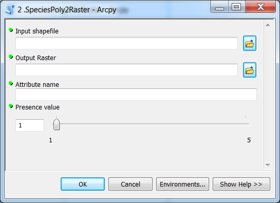

Species tool: Version 1.5¶
Before adding all the required functionality to our species converter tool, let’s make an intermediate version to make it easier to follow the process.
This Version 1.5. should execute the following processing steps:
- Import the required module (arcpy)
- Get parameters from the toolbox using
GetParametersAsTextfunction - Add a new field into the Shapefile with
AddField_managementfunction - Update the value for the attribute just created with
CalculateField_managementfunction - Convert input shapefile into a Raster Dataset using
PolygonToRaster_conversionfunction - Print info for the user that tool has finished successfully using
AddMessagefunction
The interface

The code
# Import arcpy module so we can use ArcGIS geoprocessing tools
import arcpy
""" This script adds a field into the input shapefile and updates the value
of that field based (range: 1-5) and finally rasterizes the shapefile """
# 1. Get parameters from the toolbox using 'GetParametersAsText' method
#----------------------------------------------------------------------
# --> check ArcGIS help for info how to use methods
# Method info: http://resources.arcgis.com/en/help/main/10.2/index.html#//018v00000047000000
input_species_shp = arcpy.GetParameterAsText(0)
output_path = arcpy.GetParameterAsText(1)
attribute_name = arcpy.GetParameterAsText(2)
presence_value = arcpy.GetParameterAsText(3)
# 2. Add a new field into the input shapefile with 'AddField_management' method
#------------------------------------------------------------------------------
# Method info: http://resources.arcgis.com/en/help/main/10.2/index.html#//001700000047000000
arcpy.AddField_management(in_table=input_species_shp, field_name=attribute_name, field_type="SHORT") # Other possible parameters can be left as default
# 3. Update the presence value for our newly created attribute with 'CalculateField_management' method
#-----------------------------------------------------------------------------------------------------
# Method info: http://resources.arcgis.com/en/help/main/10.2/index.html#//00170000004m000000
arcpy.CalculateField_management(in_table=input_species_shp, field=attribute_name, expression=presence_value)
# 4. Convert polygon to raster using 'PolygonToRaster_conversion' method
#-----------------------------------------------------------------------
# Method info: http://help.arcgis.com/en/arcgisdesktop/10.0/help/index.html#//001200000030000000
arcpy.PolygonToRaster_conversion(in_features=input_species_shp, value_field=attribute_name, out_rasterdataset=output_path)
# 5. Print info for the user that tool has finished succesfully using 'AddMessage' method
#----------------------------------------------------------------------------------------
# Method info: http://resources.arcgis.com/en/help/main/10.2/index.html#//018v00000007000000
my_message = "Tool finished successfully! Rock on!"
arcpy.AddMessage(my_message)